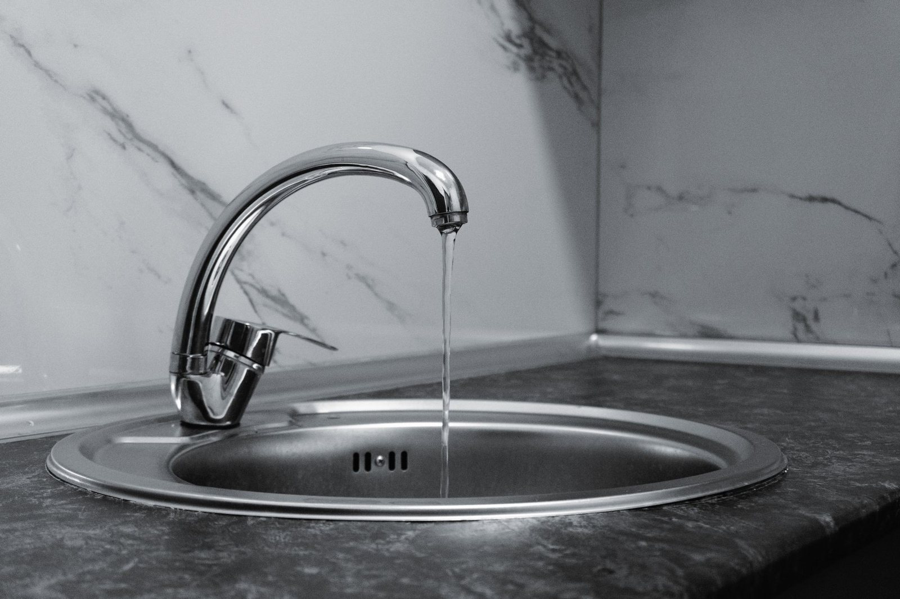
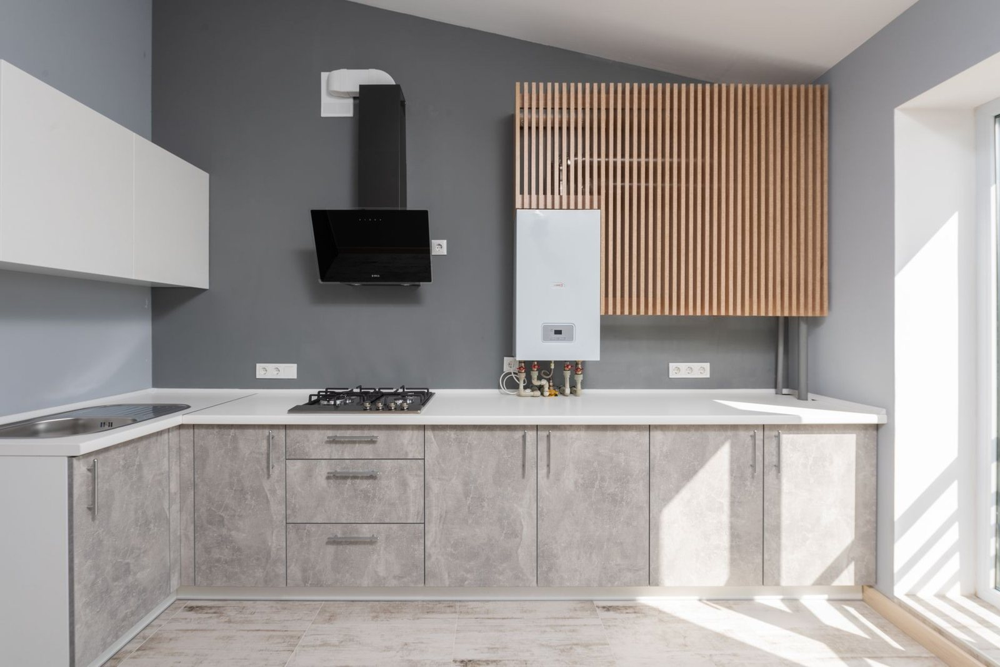
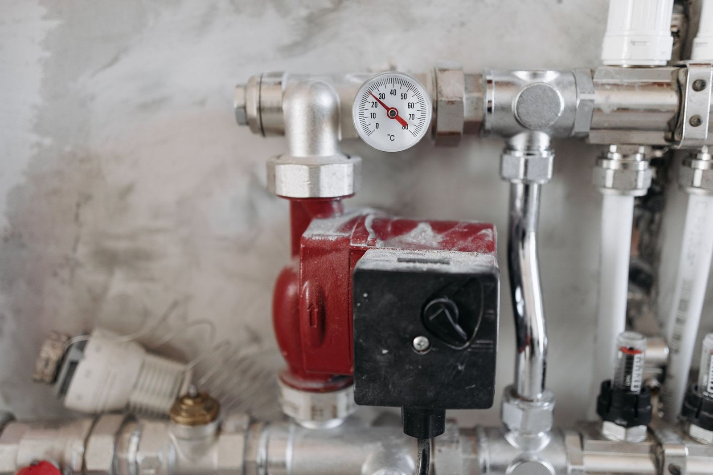
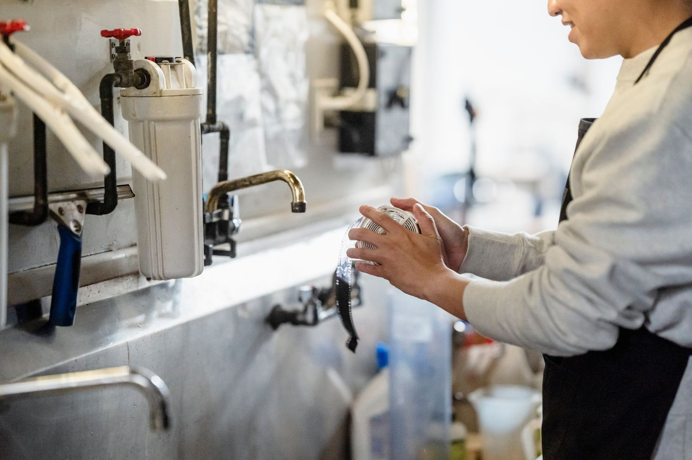
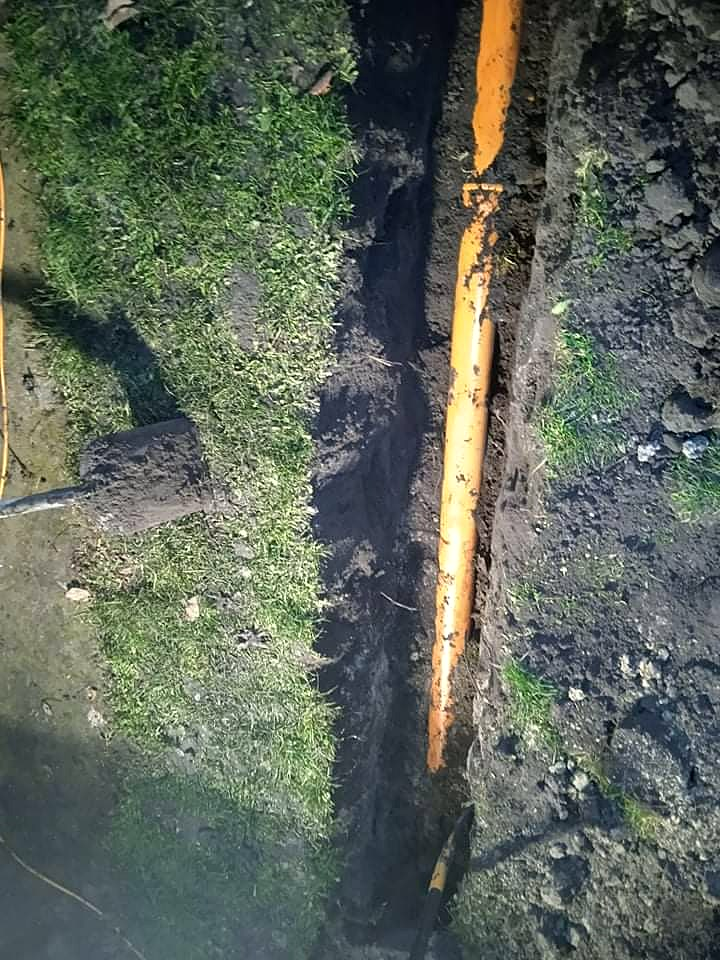

Hydraulika
& gaz
Woda, gaz i ogrzewanie to nie miejsce na prowizorkę. Liczy się fach i dokładność przy każdym połączeniu - od cieknącej baterii po nowy kocioł.
Zapytaj o wycenę 5,0 ocena w Google · 2 opinie
MATROM to usługi hydrauliczne Mateusza Wiśniewskiego z Grudziądza. Pracujemy przy trzech instalacjach: wodnej, gazowej i grzewczej. Przyjeżdżamy do cieknących rur i zatkanych odpływów, wymieniamy grzejniki i kotły, a w nowym domu rozprowadzamy instalację od przyłącza po ostatni kran.

Zajmujemy się zleceniem od pierwszego telefonu do próby szczelności.

Awarie i przecieki →
Cieknąca rura, zalana łazienka, brak wody albo ciepła. Usuwamy awarie wod-kan, gazu i CO na bieżąco, także te ukryte w ścianie.

Udrażnianie kanalizacji →
Zator w zlewie, wannie albo pionie. Kanalizację udrażniamy żmijką elektryczną, która sięga tam, gdzie przepychacz już nie daje rady.

Kotły i podgrzewacze gazowe →
Montaż kotłów gazowych, podgrzewaczy i kuchenek razem z podbiciem gwarancji producenta.

Instalacje i przyłącza gazowe →
Przyłącze gazu do budynku, instalacja gazowa w środku i próba szczelności na koniec.

Grzejniki i zamrażanie rur →
Wymiana grzejnika albo zaworu bez spuszczania wody z całego domu. Zamrażamy odcinek rury i pracujemy na czynnej instalacji.

Biały montaż →
Kabiny, zlewy, umywalki, stelaże podtynkowe, baterie i krany. Podłączamy wszystko, co ma dopływ albo odpływ wody.

Ogrzewanie podłogowe i kotłownie →
Wodne ogrzewanie podłogowe, modernizacja kotłowni i montaż kominków.

Uzdatnianie wody i ścieki →
Montaż, serwis i naprawa stacji uzdatniania wody. Do tego przydomowe oczyszczalnie i instalacje zewnętrzne.
„Polecam bardzo. Usługa wymiany grzejnika poprzez zamrożenie wykonana ekspresowo. Wykonanie całej instalacji wodno-kanalizacyjnej przebiegło bez najmniejszego problemu. Polecam.”
Magdalena Wuu · opinia w Google
„Jesteśmy razem z mężem pod wielkim wrażeniem, z jakim Pan Mateusz podszedł do sprawy wymiany grzejników. Polecamy firmę MATROM z całego serca.”
A. M. · opinia w Oferteo
„Awaria usunięta w dniu zgłoszenia. Szybko, terminowo i przede wszystkim dokładnie. Polecam z całego serca.”
M. J. · opinia w Oferteo
„Bardzo dobry hydraulik. Awaria usunięta jeszcze tego samego dnia. Polecam.”
N. L. · opinia w Oferteo

Opinie
- 3 województwaKujawy, Pomorze, Warmia i Mazury
- Woda, gaz, COtrzy instalacje, jedna firma
- Żmijka elektrycznana zatory w kanalizacji
- Zamrażanie rurwymiana bez spuszczania wody
- Podbita gwarancjaprzy montażu kotła